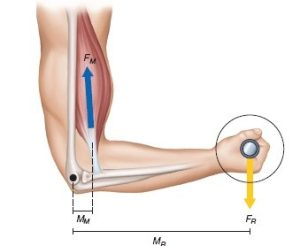
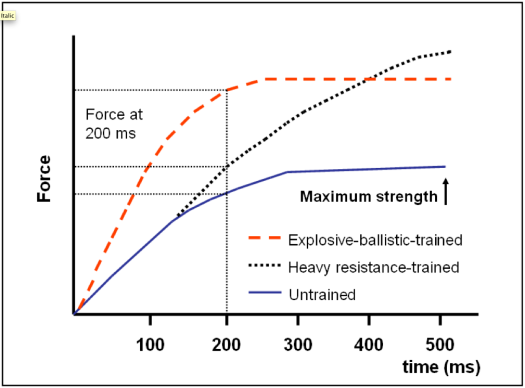

")

Physics plays a major role in how the body moves and adapts in training and yet it is overlooked by many when training. The article examines three core aspects in which physics applies: energy balance, biomechanics and force production. In the CICO section it is debated whether its accurate. It is concluded that it should only be used as approximation because everyone has different metabolic factors. The article then applies biomechanics to weightlifting movements showing how users may experience different difficulties on exercises due to body composition (example being limb length affecting bench press or squat difficulty). Finally, the article uses physics equations to explain how explosivity works and how force needs to be worked on in two ways: how fast its produced and how much is produced. Together the sections show that physics can help lifters interpret progress more accurately, improve technique, and enable informed choices when training.
Physics explains how the world works, and the gym is no exception. When we exercise we move, so work is done. When we eat we provide “fuel” and energy to our bodies. The weights we lift act as forces that can be analysed using basic physics. In this article, physics ideas are applied to calories, forces, moments and explosivity to show how they shape real training experiences.
Calories In / Calories Out (CICO) describes energy balance in the body and is based on the conservation of energy: calories consumed must either be used, stored, or lost. Energy output includes basal metabolic rate (BMR), daily physical activity, and the thermic effect of food (TEF). While this framework is valid, individuals differ significantly in how many calories they actually expend (Hall et al., 2011).
The table illustrates three people consuming the same calorie intake but experiencing different usable energy due to differences in BMR and TEF. A trained individual typically has a higher BMR because muscle tissue is more metabolically active than fat, meaning they burn more calories at rest (Wang et al., 2010). This leaves fewer calories “left over” for weight gain compared to a sedentary person, who has a lower BMR and lower TEF. Someone with digestive inefficiencies may also absorb fewer calories overall, demonstrating that intake does not always equal usable energy.
These variations explain why two people following the same calorie target may not see the same progress. CICO remains a useful framework, but it should be treated as an approximation because metabolic rate, digestion, and body composition all influence how calories are processed. Practically, this means individuals should adjust their calorie intake if they are not losing or gaining weight as expected, rather than assuming the original calculation is universally accurate.
| Individual | Daily Calorie Intake (kcal) | Estimated BMR (kcal/day) | Thermic Effect of Food (%) | Effective calories avaliable (kcal) | Notes |
|---|---|---|---|---|---|
| Person A (Highly Trained) | 2,700 | 1,850 | 12% | ≈ 2,375 | High muscle mass → higher BMR, better nutrient partitioning. |
| Person B (Sedentary) | 2,700 | 1,550 | 8% | ≈ 2,485 | Lower muscle mass → lower BMR, slightly less TEF. |
| Person C (Digestive Inefficiency) | 2,700 | 1,600 | 10% | ≈ 2,300 | Absorption losses so even less beyond just 2700−TEF calories → fewer usable calories from the same intake. |
The things we exercise with (barbells/dumbbells) have mass therefore they have a weight
Weight = Mass x g (acceleration due to gravity) (F= ma)
As a result, when moving theses weights work done (energy) is required hence: Work done (energy) = Force x Distance (in the same direction)
Our muscles must produce an internal force larger than the force generated by the (weight/cable) to complete the intended movement. The force is outputted through our bones and joints which can turn and therefore act as “biological levers”
Since in most lifts the weight is not at the joint but is at some horizontal distance away
(e.g. dumbbell curl) there is some form of perpendicular distance.
Moment (m) = Force x distance
--> A larger moment arm (arm that would have a larger moment explained in next section) means more torque to counter therefore internal torque required is larger to move or hold weight so certain movements can be made easier or harder based on positioning of arms (explained in next section)
Reference: Stone, M.H., et al. Biomechanics of Resistance Training (2016).

Figure: Example of a muscle moment arm (image source: NFPT, 2020).
The barbell provides downwards force (mg)
The pivot is the shoulder joint in a bench press movement.
The bar is held at some distance from pivot (visually can be seen on diagram)
->Moment arm formed M = Force X perpendicular distance
For longer arms lifters they hold the bar further from the pivot therefore d increase in magnitude -> larger internal moment required (NFPT, n.d.) (showing more effort needed for longer arm lifters)
If elbows are flared larger internal moment required
Technique can help with this through biomechanics e.g. closer grip smaller arm moment (triceps more involved)
Alternatively, we could talk about difficult in terms of actual work done by the lifter
Longer arms = more vertical distance to push weight through for lock out (to reach top of exercise)
Work done = force X distance if d^ then W^ therefore more effort required to complete lift
Arching the back can reduce both factors (reduces vertical distance required and external moment too)
Explosivity is often described as fast and strong movements.
This requires Internal force > external force
F = ma (a is proportional to F) having high muscular strength (can output more force) -> greater acceleration of movement itself (e.g. jump height increases)
But not the speed at which the force is produced therefore:
In addition to this we are working with the rate of force production (i.e. the derivative of force with respect to time) or simply: ΔForce / ΔTime
-> if : ΔForce / ΔTime is large -> e.g. (max force reached sooner -> Come off the floor sooner when jumping)
Understanding this means training more efficiently because we know explosivity can be obtained from having a higher magnitude force (strength training)
and through faster force production (pylometric training) -> complex training (strength training + pylometric) (Beato et al., 2023)

Figure: Example of a force–time curve showing differences in maximum strength and force at 200 ms between explosive-ballistic-trained, heavy resistance-trained, and untrained individuals.
The topics explored in this article all demonstrate how physics provides a deeper understanding of weightlifting performance and individual differences. The CICO section showed that although energy balance follows the conservation of energy, people do not process calories identically due to variations in BMR, digestion and muscle mass. This means that real-world calorie responses differ even with the same intake. The biomechanics sections then explained why certain exercises feel harder for some individuals: longer limb lengths increase the moment arm, which increases the torque the lifter must produce, making lifts such as the bench press mechanically more demanding. This shows that differences in strength between individuals are not always due to effort but sometimes due to leverage. Finally, explosivity was linked to F = ma and the rate of force development, demonstrating that power output depends not only on maximum force but also on how quickly force can be produced. Together, these ideas show how physics can guide technique, manage expectations, and help lifters choose appropriate training strategies.
To conclude, this papers intention was to inform readers how knowing a bit of physics can deeply affect your weightlifting/bodybuilding experience. The idea was to introduce different gym experiences and to explain the physics concepts behind them. The article content serves proof of how the physics works in everyday gym life, which enables users to understand why certain things are the way they are. Therefore, they can make the necessary changes to make their experience better such as improving form for performance or safety, adjusting calorie goals according to their own physical requirements. The sections successfully achieve the intended message, however the paper in general has limitations with simplification, such as when talking about biological aspects. If readers are left with questions, it could catalyse personal research, thus making bodybuilding and weightlifting more intellectually based sports, and the gym a more intellectual environment.
Hall, K.D., Sacks, G., Chandramohan, D., Chow, C.C., Wang, Y.C., Gortmaker, S.L. and Swinburn, B.A. (2011) Quantification of the effect of energy imbalance on bodyweight. *The Lancet*, 378(9793), pp. 826–837.
Link here
Wang, Z., Ying, Z., Bosy-Westphal, A., Zhang, J., Schautz, B., Later, W., Heymsfield, S.B. and Müller, M.J. (2010) Re-evaluating the relationship between fat-free mass and resting metabolic rate. *American Journal of Clinical Nutrition*, 91(3), pp. 790–796.
Link here
Escamilla, R.F. (2001) Biomechanics of strength training exercises. *Medicine & Science in Sports & Exercise*, 33(1), pp. 127–141.
Link here
Aagaard, P., Simonsen, E.B., Andersen, J.L., Magnusson, P. and Dyhre-Poulsen, P. (2002) Increased rate of force development and neural drive of human skeletal muscle following resistance training. *Journal of Applied Physiology*, 93(4), pp. 1318–1326.
Link here
National Federation of Professional Trainers (NFPT) (n.d.) Moment arms: The biomechanics of strength training.(Accessed: 04 December 2025).
Link here
Beato, M., Drust, B., Hulton, A.T., et al. (2023) Deceleration Training in Team Sports: A New Concept. *Sports Medicine*, 53(2), pp. 345–360.
Link here (Accessed: 4 December 2025).